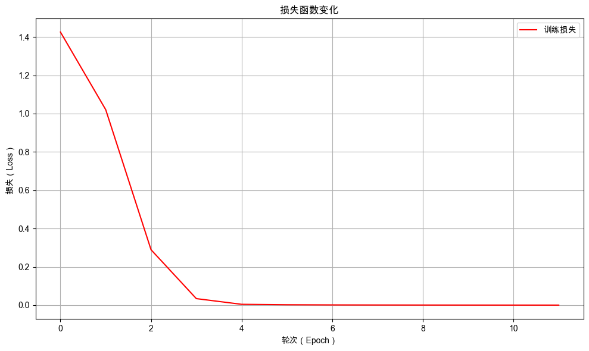

21. Transformer 模型训练和评估#
21.1. 介绍#
前面的章节中，我们介绍了 Transformer 模型的基本结构和工作原理，并实现一个完整的基于 Transformer 模型的加法计算模型。在这一章节中，我们将重点关注 Transformer 模型的训练和评估过程。
21.2. 环境配置#
21.2.1. 安装依赖#
!pip install --upgrade dsxllm
21.2.2. 环境版本#
from dsxllm.util import show_version
show_version()
/Users/kong/opt/anaconda3/envs/dsx-ai/lib/python3.12/site-packages/tqdm/auto.py:21: TqdmWarning: IProgress not found. Please update jupyter and ipywidgets. See https://ipywidgets.readthedocs.io/en/stable/user_install.html
from .autonotebook import tqdm as notebook_tqdm
本书愿景：
+------+--------------------------------------------------------+
| Info | 《动手学大语言模型》 |
+------+--------------------------------------------------------+
| 作者 | 吾辈亦有感 |
| 哔站 | https://space.bilibili.com/3546632320715420 |
| 定位 | 基于'从零构建'的理念，用实战帮助程序员快速入门大模型。 |
| 愿景 | 若让你的AI学习之路走的更容易一点，我将倍感荣幸！祝好😄 |
+------+--------------------------------------------------------+
环境信息：
+-------------+--------------+------------------------+
| Python 版本 | PyTorch 版本 | PyTorch Lightning 版本 |
+-------------+--------------+------------------------+
| 3.12.12 | 2.10.0 | 2.6.1 |
+-------------+--------------+------------------------+
21.3. 初始化模型和训练器#
from dsxllm.transformer.tokenizer import get_tokenizer
from dsxllm.transformer.dataset import TextTransform, TextDataModule
from dsxllm.transformer.model import Transformer
import lightning as L
# 超参配置
encoder_max_length = 7 # 编码器输入最大长度
decoder_max_length = 6 # 解码器输入最大长度
batch_size = 100 # 批次大小
d_model = 128 # 模型维度
feedforward_size = 512 # 前馈神经网络维度
n_layers = 4 # 编码器和解码器层数
learning_rate = 0.0001 # 学习率
# 1️⃣ 初始化分词器
tokenizer = get_tokenizer()
# 2️⃣ 初始化编码器和解码器的数据转换器
encoder_transform = TextTransform(tokenizer, max_length=encoder_max_length)
decoder_transform = TextTransform(tokenizer, max_length=decoder_max_length)
# 3️⃣ 加载数据模组
datamodule = TextDataModule(
batch_size=batch_size,
encoder_transform=encoder_transform,
decoder_transform=decoder_transform,
train_data_file="./dataset/addition_train.txt",
val_data_file="./dataset/addition_val.txt",
)
# 4️⃣ 初始化模型
model = Transformer(
tokenizer,
d_model,
feedforward_size,
n_layers=n_layers,
learning_rate=learning_rate,
encoder_max_length=encoder_max_length,
decoder_max_length=decoder_max_length - 1,
)
# 5️⃣ 初始化训练器
trainer = L.Trainer(
max_epochs=12, # 最大训练轮数
log_every_n_steps=3, # 每 3 个批次打印一次日志
check_val_every_n_epoch=1, # 每轮训练验证一次
num_sanity_val_steps=0, # 训练前不进行验证
enable_progress_bar=False, # 不显示进度条
)
GPU available: True (mps), used: True
TPU available: False, using: 0 TPU cores
/Users/kong/opt/anaconda3/envs/dsx-ai/lib/python3.12/site-packages/lightning/pytorch/trainer/connectors/logger_connector/logger_connector.py:76: Starting from v1.9.0, `tensorboardX` has been removed as a dependency of the `lightning.pytorch` package, due to potential conflicts with other packages in the ML ecosystem. For this reason, `logger=True` will use `CSVLogger` as the default logger, unless the `tensorboard` or `tensorboardX` packages are found. Please `pip install lightning[extra]` or one of them to enable TensorBoard support by default
💡 Tip: For seamless cloud logging and experiment tracking, try installing [litlogger](https://pypi.org/project/litlogger/) to enable LitLogger, which logs metrics and artifacts automatically to the Lightning Experiments platform.
21.4. 训练前评估#
训练前评估为模型性能建立初始性能基准。
# 直接调用验证函数进行评估
trainer.validate(model=model, datamodule=datamodule)
💡 Tip: For seamless cloud uploads and versioning, try installing [litmodels](https://pypi.org/project/litmodels/) to enable LitModelCheckpoint, which syncs automatically with the Lightning model registry.
/Users/kong/opt/anaconda3/envs/dsx-ai/lib/python3.12/site-packages/lightning/pytorch/utilities/_pytree.py:21: `isinstance(treespec, LeafSpec)` is deprecated, use `isinstance(treespec, TreeSpec) and treespec.is_leaf()` instead.
***** Validation: 样本总数 5000 正确预测: 0 正确率: 0.0000 *****
┏━━━━━━━━━━━━━━━━━━━━━━━━━━━┳━━━━━━━━━━━━━━━━━━━━━━━━━━━┓ ┃ Validate metric ┃ DataLoader 0 ┃ ┡━━━━━━━━━━━━━━━━━━━━━━━━━━━╇━━━━━━━━━━━━━━━━━━━━━━━━━━━┩ │ correct_sequences │ 0.0 │ │ correct_tokens │ 705.0 │ │ seq_acc │ 0.0 │ │ token_acc │ 0.03403495252132416 │ │ total_sequences │ 5000.0 │ │ total_tokens │ 20714.0 │ └───────────────────────────┴───────────────────────────┘
[{'total_sequences': 5000.0,
'correct_sequences': 0.0,
'seq_acc': 0.0,
'total_tokens': 20714.0,
'correct_tokens': 705.0,
'token_acc': 0.03403495252132416}]
21.5. 训练模型#
调用 trainer.fit() 训练 12 个轮次。
model.clear_cache()
trainer.fit(model=model, datamodule=datamodule)
┏━━━┳━━━━━━━━━┳━━━━━━━━━┳━━━━━━━━┳━━━━━━━┳━━━━━━━━┳━━━━━━━━━━━━━━━━━━━━━━━━━━━━━━━┳━━━━━━━━━━━━━┓ ┃ ┃ Name ┃ Type ┃ Params ┃ Mode ┃ FLOPs ┃ In sizes ┃ Out sizes ┃ ┡━━━╇━━━━━━━━━╇━━━━━━━━━╇━━━━━━━━╇━━━━━━━╇━━━━━━━━╇━━━━━━━━━━━━━━━━━━━━━━━━━━━━━━━╇━━━━━━━━━━━━━┩ │ 0 │ encoder │ Encoder │ 987 K │ train │ 27.7 M │ [2, 7] │ [2, 7, 128] │ │ 1 │ decoder │ Decoder │ 1.2 M │ train │ 24.9 M │ [[2, 5], [2, 7], [2, 7, 128]] │ [2, 5, 16] │ └───┴─────────┴─────────┴────────┴───────┴────────┴───────────────────────────────┴─────────────┘
Trainable params: 2.2 M Non-trainable params: 0 Total params: 2.2 M Total estimated model params size (MB): 8 Modules in train mode: 125 Modules in eval mode: 0 Total FLOPs: 52.7 M
***** Validation: 样本总数 5000 正确预测: 76 正确率: 0.0152 *****
***** 【Epoch 0】 Train Avg Loss: 1.4259 *****
***** Validation: 样本总数 5000 正确预测: 1124 正确率: 0.2248 *****
***** 【Epoch 1】 Train Avg Loss: 1.0204 *****
***** Validation: 样本总数 5000 正确预测: 4582 正确率: 0.9164 *****
***** 【Epoch 2】 Train Avg Loss: 0.2894 *****
***** Validation: 样本总数 5000 正确预测: 4983 正确率: 0.9966 *****
***** 【Epoch 3】 Train Avg Loss: 0.0340 *****
***** Validation: 样本总数 5000 正确预测: 4999 正确率: 0.9998 *****
***** 【Epoch 4】 Train Avg Loss: 0.0043 *****
***** Validation: 样本总数 5000 正确预测: 5000 正确率: 1.0000 *****
***** 【Epoch 5】 Train Avg Loss: 0.0020 *****
***** Validation: 样本总数 5000 正确预测: 5000 正确率: 1.0000 *****
***** 【Epoch 6】 Train Avg Loss: 0.0012 *****
***** Validation: 样本总数 5000 正确预测: 5000 正确率: 1.0000 *****
***** 【Epoch 7】 Train Avg Loss: 0.0008 *****
***** Validation: 样本总数 5000 正确预测: 5000 正确率: 1.0000 *****
***** 【Epoch 8】 Train Avg Loss: 0.0006 *****
***** Validation: 样本总数 5000 正确预测: 5000 正确率: 1.0000 *****
***** 【Epoch 9】 Train Avg Loss: 0.0005 *****
***** Validation: 样本总数 5000 正确预测: 5000 正确率: 1.0000 *****
***** 【Epoch 10】 Train Avg Loss: 0.0003 *****
`Trainer.fit` stopped: `max_epochs=12` reached.
***** Validation: 样本总数 5000 正确预测: 5000 正确率: 1.0000 *****
***** 【Epoch 11】 Train Avg Loss: 0.0003 *****
21.5.1. 训练过程可视化#
绘制训练过程中损失值的变化曲线。
from dsxllm.util import plot_loss_curves
plot_loss_curves(model.train_epoch_losses)

21.5.2. 查看模型评估记录#
查看训练过程中的评估结果，观察模型在验证集上的表现。
from dsxllm.util import to_dataframe
df = to_dataframe(model.validation_epoch_outputs)
display(df)
| epoch | 总样本数 | 正确样本数 | 样本准确率 | 总Token数 | 正确Token数 | Token准确率 | |
|---|---|---|---|---|---|---|---|
| 0 | 0 | 5000 | 76 | 0.0152 | 20714 | 9495 | 0.4584 |
| 1 | 1 | 5000 | 1124 | 0.2248 | 20714 | 14741 | 0.7116 |
| 2 | 2 | 5000 | 4582 | 0.9164 | 20714 | 20287 | 0.9794 |
| 3 | 3 | 5000 | 4983 | 0.9966 | 20714 | 20697 | 0.9992 |
| 4 | 4 | 5000 | 4999 | 0.9998 | 20714 | 20713 | 1.0000 |
| 5 | 5 | 5000 | 5000 | 1.0000 | 20714 | 20714 | 1.0000 |
| 6 | 6 | 5000 | 5000 | 1.0000 | 20714 | 20714 | 1.0000 |
| 7 | 7 | 5000 | 5000 | 1.0000 | 20714 | 20714 | 1.0000 |
| 8 | 8 | 5000 | 5000 | 1.0000 | 20714 | 20714 | 1.0000 |
| 9 | 9 | 5000 | 5000 | 1.0000 | 20714 | 20714 | 1.0000 |
| 10 | 10 | 5000 | 5000 | 1.0000 | 20714 | 20714 | 1.0000 |
| 11 | 11 | 5000 | 5000 | 1.0000 | 20714 | 20714 | 1.0000 |
21.6. 训练后评估#
与训练前的评估结果对比，确认模型训练效果是否有效。
# 直接调用验证函数进行评估
trainer.validate(model=model, datamodule=datamodule)
/Users/kong/opt/anaconda3/envs/dsx-ai/lib/python3.12/site-packages/lightning/pytorch/utilities/_pytree.py:21: `isinstance(treespec, LeafSpec)` is deprecated, use `isinstance(treespec, TreeSpec) and treespec.is_leaf()` instead.
***** Validation: 样本总数 5000 正确预测: 5000 正确率: 1.0000 *****
┏━━━━━━━━━━━━━━━━━━━━━━━━━━━┳━━━━━━━━━━━━━━━━━━━━━━━━━━━┓ ┃ Validate metric ┃ DataLoader 0 ┃ ┡━━━━━━━━━━━━━━━━━━━━━━━━━━━╇━━━━━━━━━━━━━━━━━━━━━━━━━━━┩ │ correct_sequences │ 5000.0 │ │ correct_tokens │ 20714.0 │ │ seq_acc │ 1.0 │ │ token_acc │ 1.0 │ │ total_sequences │ 5000.0 │ │ total_tokens │ 20714.0 │ └───────────────────────────┴───────────────────────────┘
[{'total_sequences': 5000.0,
'correct_sequences': 5000.0,
'seq_acc': 1.0,
'total_tokens': 20714.0,
'correct_tokens': 20714.0,
'token_acc': 1.0}]
21.7. 使用模型进行预测#
使用一些测试算式进行推理预测，直观观察模型的预测效果。
from dsxllm.util import print_generation_predictions
# 1️⃣ 创建一些测试问题和答案
questions = ["829+33", "58+136", "22+593", "243+269", "1+1"]
answers = ["862", "194", "615", "512", "2"]
# 2️⃣ 使用与训练时统一的数据处理方法对输入进行处理
question_encoded = encoder_transform(questions)
encoder_input_ids = question_encoded["input_ids"]
# 3️⃣ 使用模型进行预测
generated_texts = model.generate_batch(encoder_input_ids)
# 4️⃣ 输出预测结果
print_generation_predictions(questions, answers, generated_texts)
🎯 生成结果 (准确率: 5/5 = 100.00%)：
+---------+--------+--------+------+
| 输入 | 真实值 | 预测值 | 标记 |
+---------+--------+--------+------+
| 829+33 | 862 | 862 | ☑ |
| 58+136 | 194 | 194 | ☑ |
| 22+593 | 615 | 615 | ☑ |
| 243+269 | 512 | 512 | ☑ |
| 1+1 | 2 | 2 | ☑ |
+---------+--------+--------+------+
21.8. 本章小结#
我们已经完成了使用 Transformer 重构加法计算模型的工作。经过训练和评估，新模型在评估集上的准确率达到了 100%。通过这个小任务，我们亲手实现了 Transformer 的所有组件，深入透彻地掌握了其工作原理，并深刻体会到从循环神经网络到 Transformer 的革命性飞跃。掌握 Transformer，就相当于掌握了破解现代大语言模型的钥匙。从下一章开始，我们将正式开启大语言模型的新篇章。
21.9. 答疑讨论#
○ 如果你觉得这篇文章有所帮助，欢迎将本文链接推荐给更多人——无论是分享到朋友圈、博客、社群，还是任何你常逛的地方。每一次转发，都会让它在搜索结果中更容易被有需要的人看到。